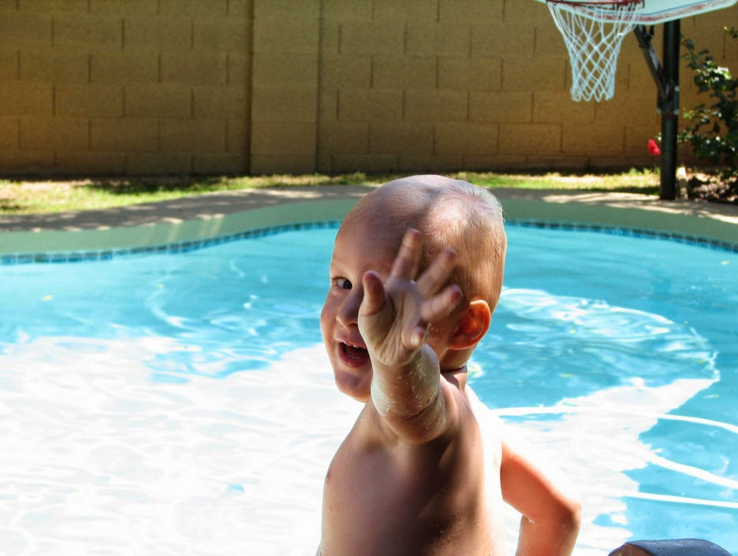
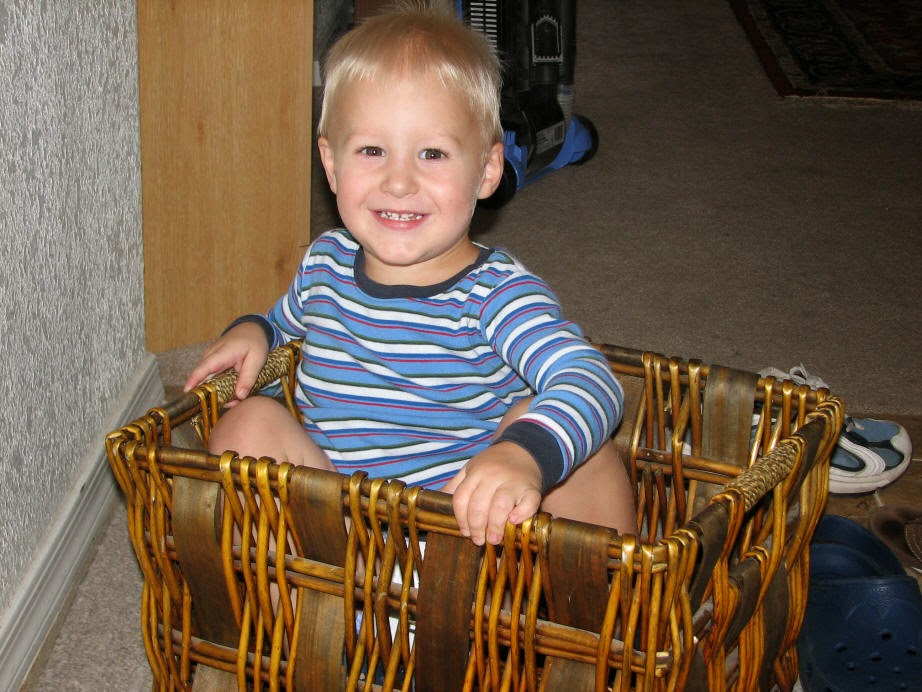

Recovered weblog entry
Shoes
It was an interesting weekend, and a quick one at that. After work on Friday, Jenna, Sumner and I scooted off to Scottsdale rather quickly to attend my cousin's birthday dinner at a restaurant called Tucci's. More about that particular dining establishment later.
I hadn't seen this particular cousin since July of 2003, shortly after I married. She's now 21 years old, and it's just another one of those "How old am I?" moments in life. She's a good gal, and it was certainly good to see her and her parentals. She was quite glad to find out that I had a MySpace, and I was not surprised that she had one. At all. She fits the demographic, I believe.
And yes, I know there are a few of you out there (the ones that didn't come here straight from MySpace) that are staring at your monitor, cursing my name for selling my soul to the MySpace regime. No worries, mates. I do it for several reasons:
- I've actually found a few people that I wanted to find
- It lets people know that I have a predilection for blogs
- Jenna has one, so why can't I?
The restaurant. Pizza joints are a dime/dozen. Good pizza joints are much, much rarer. So when we strolled up to Tucci's and saw the typical advertisements regarding their authenticity, I was skeptical at best.
I guess that's the good thing about keeping your guard up, though. A pleasant surprise can turn into a refreshing experience. This pizza was good. They seemed to care about the two most important pieces to the puzzle: the bread and the sauce. You get either one of those wrong, and you have a bad pie. You get both of those wrong, and I'm counting the days until the place closes down.
Saturday, we cleaned. I mean, we CLEANED. From the baseboards to the corners of the closets, nothing avoided our sanitizing stare. The master closet bore the brunt of our efforts, as that was the worst location in the home. We ended up with eight full bags of clothes to hand away. The only way this fit in there before was because the clothes were crammed in there so tightly. Tetris would have been jealous. (Lame, lame sentence. I know.)
And of course, I took every last shirt to the cleaners. Time to look presentable at work again, I presume. But when every shirt that you own is at the cleaners, it makes it insurmountably difficult to go to church the next day. I didn't think about this until I tried getting ready. Ho, hum.
We also saw the movie "Click" on Saturday night. Typical Adam Sandler movie, mind you, with plenty of cursing, dogs humping stuffed animals, and the now common uncomfortable crying.
Crying?
We went as a group of three couples, and all three girls were bawling by the end of the movie. I don't mind them crying at all, but it just seems so out of place to start crying after hearing Mr. Sandler say "What? Your dad's stereo BLOWS?" a few times.
That about sums up the weekend. I'll leave you with a few pictures of Sumner, and bid you adieu for a week.


Have I ever told you Sumner loved shoes? He also loves the shoe box. Sorry for the choppy video. (click picture for movie, 3mb WMV file)